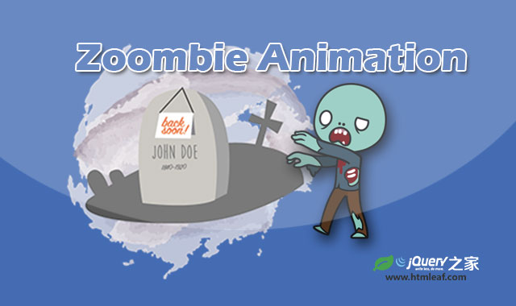
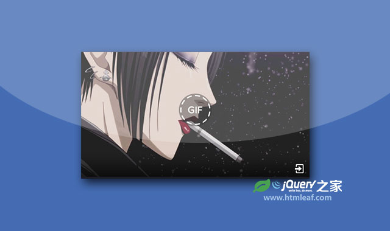

animateSprite-可控制雪碧图（sprites）动画的jQuery插件
Animating sprites using jQuery made easy
jQuery之家
返回下载页
Go Left
Go Right
Play
Stop
Resume
Restart
Change FPS
Remove DOM
如果你喜欢这个插件，那么你可能也喜欢:

使用steps属性制作僵尸行走CSS3 Sprite动画特效

类似Facebook的GIF图片播放jQuery插件